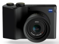

器材库 > 不可换镜头数码相机 > ZX1

规格总览
发布日期
2018-09-27
影像规格
影像传感器
CMOS
影像传感器尺寸
36×24mm
有效像素
3740万
静态图像尺寸
7488×4992
画幅比
3:2
短片格式
MPEG4-AVC/H.264
短片尺寸
3840×2160 @ 30p, 1920×1080 @ 60p
镜头和对焦
焦距
35mm
最大光圈
f/2
对焦模式
AF, MF
手动对焦
支持
曝光控制
快门速度
30秒 - 1/8000秒
ISO感光度
Auto, 80-51200
连拍
3.0 fps
取景规格
取景器
电子取景器
LCD尺寸
4.3英寸
LCD像素
276万
LCD特性
触摸屏
文件输入/输出
内置存储容量
512 GB
数据接口
USB C 型，超速 USB3.1 GEN1
视频/音频接口
HDMI 输出
无线功能
Wi-Fi, 蓝牙
外观
颜色
黑色
尺寸
142×93×46mm
重量
含电池约800g
其它
软件
Adobe Photoshop Lightroom CC
该产品暂无存档的网友点评
产品图 / 样片
ZX1
评测 / 相关文章
- 详细内容 （存档）
- ［资讯］国外摄影师体验蔡司ZX1 （存档）
- ［资讯］蔡司ZX1详细规格公布 （存档）
- ［资讯］蔡司采访：ZX1是满足摄影的新一代相机 （存档）
- ［资讯］蔡司ZX1与索尼RX1、徕卡Q比大小 （存档）
- ［资讯］蔡司ZX1相机外观图曝光 （存档）
相关文章
- ［资讯］国外摄影师体验蔡司ZX1 （存档）
- ［资讯］蔡司ZX1详细规格公布 （存档）
- ［资讯］蔡司采访：ZX1是满足摄影的新一代相机 （存档）
- ［资讯］蔡司ZX1与索尼RX1、徕卡Q比大小 （存档）
- ［资讯］蔡司ZX1相机外观图曝光 （存档）
- ［资讯］蔡司发布全幅相机ZX1 （存档）